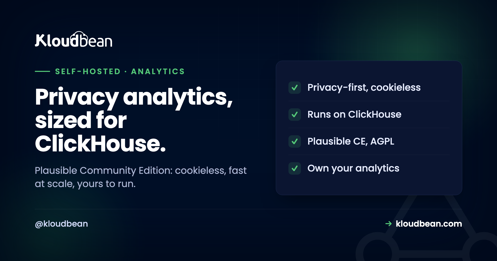

Self-Host Plausible: Great Analytics, but Mind the ClickHouse

Plausible is one of the nicest privacy-first analytics tools going: cookieless, GDPR-friendly, a tracking script small enough that it barely registers, and a dashboard that shows you what matters without the sprawl of Google Analytics. Self-hosting it means owning your visitors' data instead of shipping it to an ad company. All good so far. The thing most quick guides gloss over is what Plausible runs on, because self-hosting it is not a single lightweight container. It wants ClickHouse, and that one fact should shape your decision, your server sizing, and whether Plausible or a lighter alternative is right for you.
Plausible is a privacy-first, cookieless web analytics tool built in Elixir, and its self-hosted release is Plausible Community Edition (CE), which is free and AGPL-licensed. Self-host it to own your analytics data and drop the cookie banner. The important thing to plan for: Plausible stores its analytics events in ClickHouse, a separate analytics database, alongside PostgreSQL for configuration, so it is heavier to run than single-database tools like Umami. That ClickHouse foundation is exactly why it stays fast on large traffic. Choose Plausible when you want its polish and scale and can run ClickHouse; choose Umami if you want the lightest possible self-hosted analytics or the ability to inspect individual visits.
What Plausible actually is
A deliberately simple, privacy-respecting way to see how your site is doing, without the baggage.
Plausible is web analytics built around privacy: no cookies, no cross-site tracking, a small script (the docs put it under a kilobyte), and a clean single-page dashboard of the numbers most people actually look at. It is built in Elixir, it is GDPR and CCPA friendly by design, and it is a popular, credible replacement for Google Analytics for people who want their stats without surveilling their visitors. The version you self-host is Plausible Community Edition, or CE, which is free and released under the AGPL. The company also runs a paid managed cloud, and those subscriptions fund the project's development, which is worth understanding so the CE-versus-cloud distinction does not surprise you later.
So far this sounds like every privacy-analytics tool, including the one you may already have read about here, Umami. The difference is underneath, and it is the whole story.
The ClickHouse reality (plan for this)
If you skim one section, make it this one, because it is the fact that changes your setup.
Plausible does not store analytics events in a normal relational database. It uses ClickHouse, a column-oriented database purpose-built for analytics, to hold the event data, and it uses PostgreSQL alongside for configuration and account data. That design is a genuine strength: ClickHouse is why Plausible stays fast when you are querying millions of events, and why it scales to serious traffic without slowing to a crawl. It is also, unavoidably, more to run. Self-hosting Plausible means operating ClickHouse as well as Postgres, which is more moving parts, more memory, and more to understand than a tool that lives in a single database.
This is not a criticism of Plausible; it is a design trade you should make on purpose. If you have real traffic and want analytics that stay snappy at scale, the ClickHouse foundation is a feature worth its weight. If you run a modest site and just want the lightest possible thing to own, the extra database is overhead you may not need, and that is precisely where a single-database alternative comes in. Either way, size your server for ClickHouse from the start rather than discovering its appetite after launch.
Plausible or Umami? Weight versus scale
Both are excellent privacy-first, cookieless analytics tools, so the choice is about fit, not quality.
Plausible, with ClickHouse behind it, is built to stay fast on large volumes of traffic and takes a firmly aggregate view: it shows you trends and totals rather than letting you follow a single visitor around your site. Umami is lighter, running on a single PostgreSQL or MySQL database, which makes it simpler and cheaper to self-host, and it will let you inspect individual visit paths if that is something you want. So the decision is honest and clean: if scale and polish matter and you can run ClickHouse, Plausible is a lovely choice; if you want the simplest, lightest self-hosted analytics, or you value drilling into individual visits, Umami is the easier yes.
| Plausible (CE) | Umami | |
|---|---|---|
| Analytics store | ClickHouse, plus Postgres for config | Single PostgreSQL or MySQL |
| Weight to self-host | Heavier (two databases) | Light (one database) |
| Scales to heavy traffic | Yes, that is ClickHouse's job | Fine for most sites |
| View of data | Aggregate stats | Aggregate plus individual visits |
| Both are | Cookieless, privacy-first, open source | Cookieless, privacy-first, open source |
| Choose it when | Scale, polish, you can run ClickHouse | Lightest self-host, individual visits |
What it takes to run, and backups
Two databases and a server, with the sizing driven by ClickHouse rather than the app.
Plausible CE is distributed to run with its ClickHouse and PostgreSQL dependencies, so a self-host is the Plausible app, a ClickHouse instance for events, and Postgres for configuration, behind a reverse proxy with HTTPS. ClickHouse is the memory-hungry part, so give the server room. On the Postgres side, pointing the configuration database at a managed PostgreSQL takes one component off your plate and keeps it backed up, while ClickHouse runs on the server as part of Plausible's own stack. ClickHouse is also one of the engines Kloudbean can enable on request, which is the same reasoning behind keeping your whole data layer in one dashboard rather than renting a separate vendor for every engine you add.
For backups, remember there are two stores that matter: ClickHouse holds the analytics events, which are the actual value, and Postgres holds the configuration. A real backup routine covers both, shipped off the server on a schedule, with a restore you have tested, as in the backups guide. It is easy to back up the small Postgres config and forget the ClickHouse data that is the whole point, so do not make that mistake.
What production adds to self-Host Plausible
Plausible runs well on a managed server, with a clear division of what the platform handles and what you do. You run the Plausible stack, including ClickHouse, on a managed server across any of seven clouds, behind a managed reverse proxy with free auto-renewing SSL, and you can put the PostgreSQL configuration database on managed PostgreSQL so that part is maintained and backed up. Honesty matters here: ClickHouse is not one of the managed database engines, so it runs on the server as part of Plausible's own stack rather than as a managed service, which is one more reason to size the box for it.
The honest boundary: the platform runs the server, the Postgres database, SSL, and backups, and gives you the machine to run ClickHouse on. ClickHouse itself, the Plausible application, and your analytics data are yours to operate and own. Managed hosting removes the server and Postgres busywork; it does not turn ClickHouse into someone else's problem, and pretending otherwise would just set you up for a surprise.
Other angles on self-Host Plausible
For the lighter, single-database alternative and the full comparison, self-hosting Umami. The rest of the category is in best self-hosted tools. The configuration database is managed PostgreSQL, and both data stores need server backups. If analytics is part of a wider owned stack, self-hosting Ghost for publishing is good company.
Take it off localhost for good.
Move the whole thing onto a managed server you own: always-on processes, a managed database for real data, object storage for uploads, and Git deploys with live build logs.
- ✓ Managed databases
- ✓ Always-on processes
- ✓ Object storage
- ✓ Automatic backups
- ✓ Free SSL
- ✓ Git deploy
- ✓ Free migration
FAQ
What is Plausible Community Edition?
Plausible Community Edition, or CE, is the free, self-hostable version of Plausible Analytics, released under the AGPL license. It gives you the privacy-first, cookieless analytics that Plausible is known for, running on your own server. The company also offers a paid managed cloud, and those subscriptions fund the project, so CE is the self-hosted release rather than a stripped demo, but the CE-versus-cloud distinction is worth understanding when you plan.
Why does Plausible need ClickHouse?
ClickHouse is a column-oriented database built for analytics, and Plausible uses it to store event data so that queries stay fast even across millions of events. PostgreSQL is used alongside it for configuration and account data. The ClickHouse foundation is exactly why Plausible scales well on heavy traffic, but it also means self-hosting Plausible involves running two databases, which is more to operate than a single-database tool.
Is Plausible heavier to self-host than Umami?
Yes. Plausible runs ClickHouse plus PostgreSQL, while Umami runs on a single PostgreSQL or MySQL database. That makes Plausible more capable at scale but heavier to operate and hungrier for memory, mostly because of ClickHouse. If you want the lightest possible self-hosted analytics, Umami is simpler; if you have real traffic and want speed at scale, Plausible's extra weight buys you something real.
Plausible or Umami, which should I self-host?
Choose Plausible if you value its polish, want analytics that stay fast on large traffic, and are comfortable running ClickHouse. Choose Umami if you want the simplest, lightest self-hosted analytics on a single database, or if you want to inspect individual visitor paths, which Plausible's aggregate-focused approach does not emphasise. Both are cookieless, privacy-first, and open source, so it is a fit decision rather than a quality one.
Does Plausible use cookies?
No. Plausible is cookieless by design and does not track users across sites, which is why it can run without a cookie consent banner in many jurisdictions and is considered GDPR and CCPA friendly. It collects aggregate, privacy-respecting statistics rather than building individual profiles, which is the whole point of choosing it over a traditional analytics platform.
How do I back up self-hosted Plausible?
Back up both databases, because they hold different things. ClickHouse holds your analytics events, which are the actual value, and PostgreSQL holds configuration and account data. Ship both off the server automatically on a schedule and test a restore. A common mistake is backing up the small Postgres config and forgetting the ClickHouse data, so make sure your routine covers the events, not just the settings.
Can Kloudbean run ClickHouse as a managed database?
No. ClickHouse is not one of the managed database engines, so with Plausible it runs on your server as part of Plausible's own stack rather than as a managed service. You can, however, put the PostgreSQL configuration database on managed PostgreSQL. Practically, that means sizing the server with ClickHouse in mind, since it is the component you operate yourself.
Is Plausible a one-click app on Kloudbean?
No. Plausible runs as a standard application with its ClickHouse and PostgreSQL dependencies rather than a one-click install. You run it on a right-sized server behind a managed reverse proxy with free SSL, optionally with the Postgres configuration database on managed PostgreSQL. The platform keeps the server and Postgres healthy, while ClickHouse and the Plausible app stay yours to run.